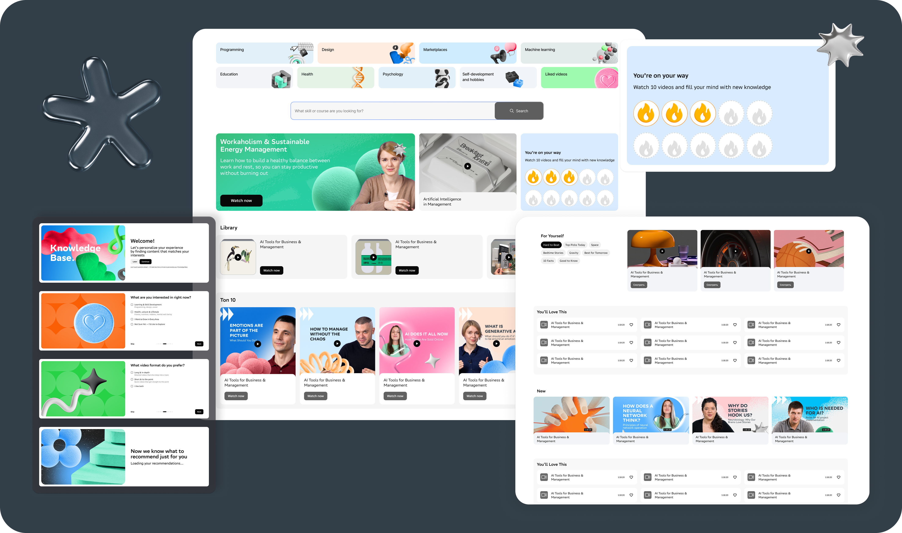
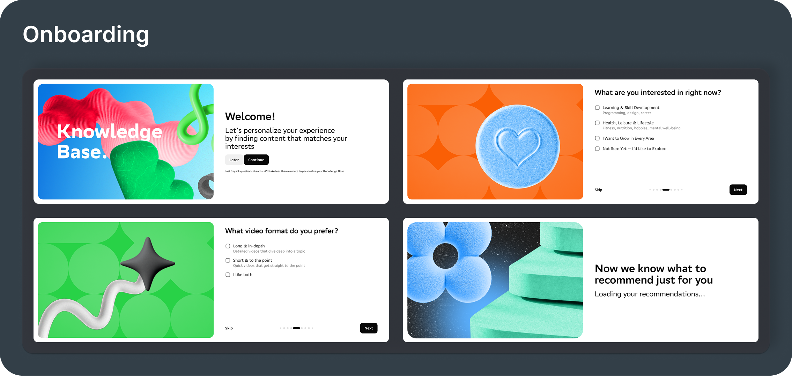
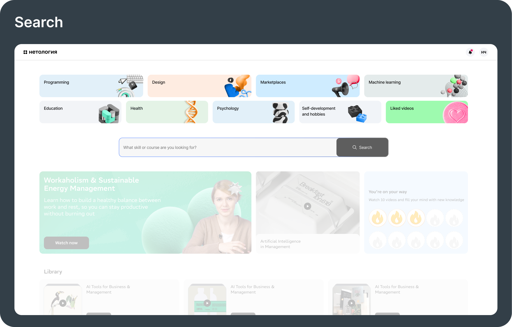
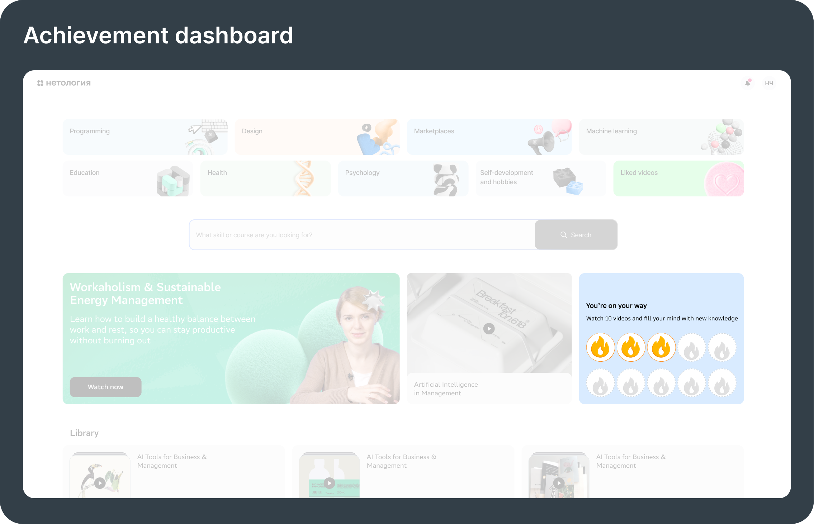
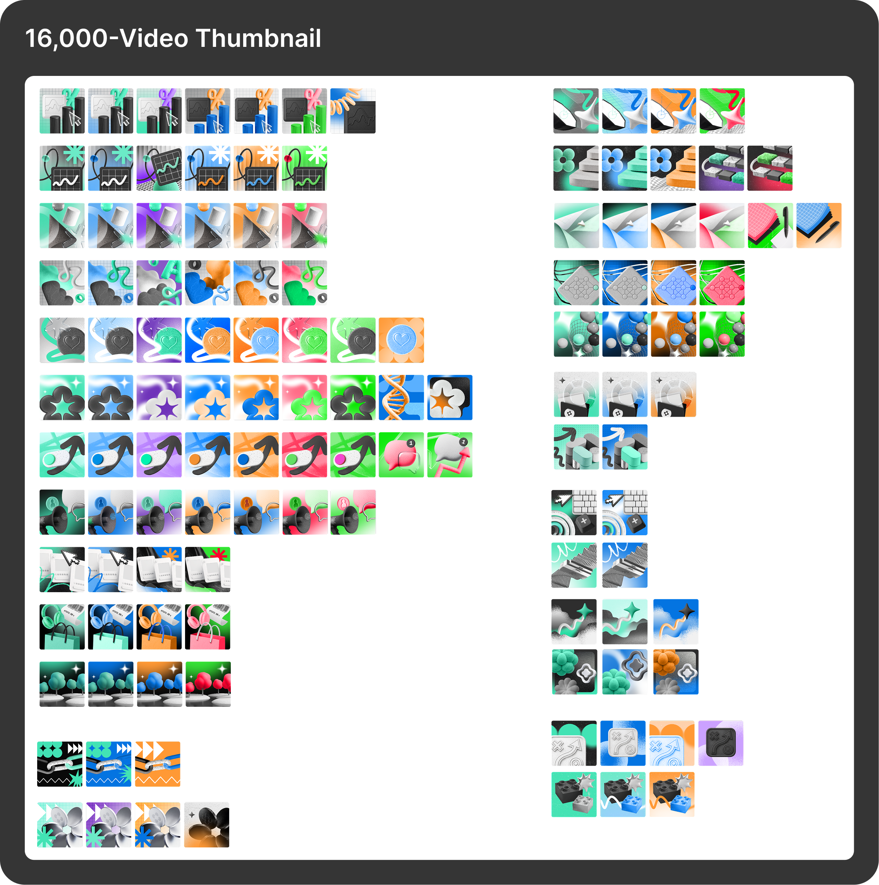
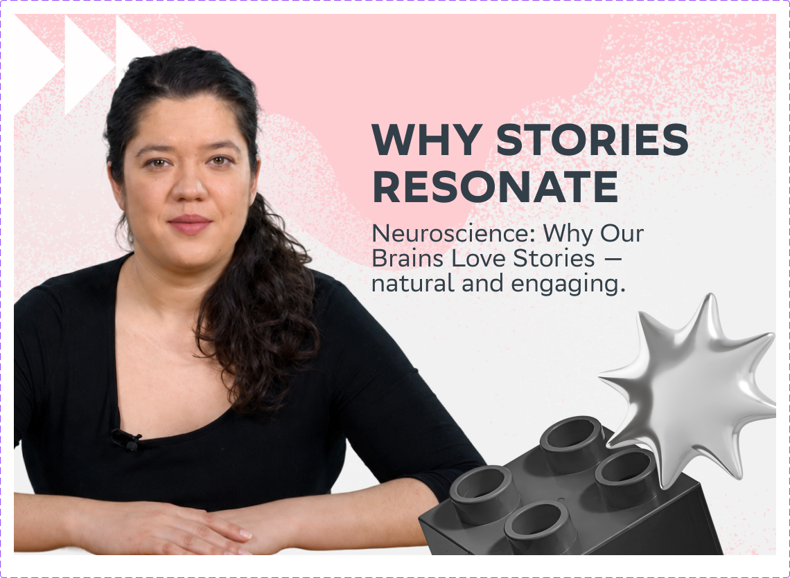
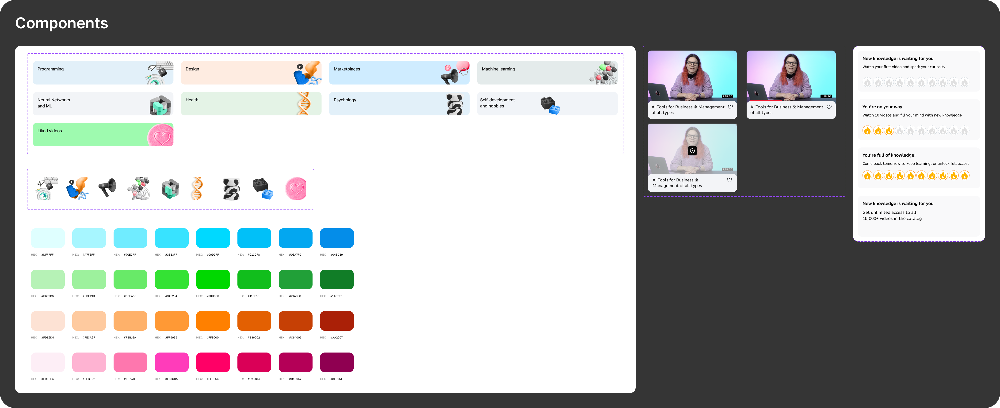
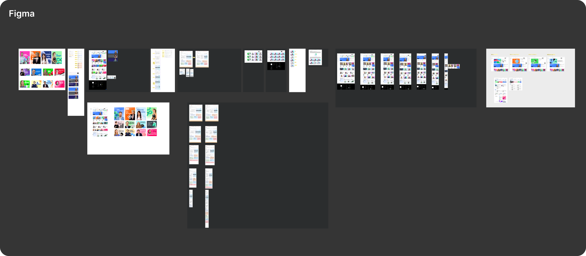

Netology
How I turned more first-time visitors into paying subscribers — increasing activation by 17% and D7 retention from 21% to 40%.
B2C EdTech platform for professional growth — 1.5M+ users, 130K graduates. Embedded in the subscription product team alongside Product, Engineering, and Analytics. Work spanned onboarding, content discovery, gamification, and expert profile setup — also cutting expert onboarding time by 50%.
+17%
activation after onboarding & content discovery redesign
21→40%
D7 retention after gamification & achievement dashboard
−50%
expert onboarding time after simplifying profile setup


Onboarding
Problem
There was no onboarding. Users landed on a blank feed and had to figure out the platform themselves.
How I solved it
Added a short question flow at signup that personalizes the entire content feed before the user watches a single video.

Search
Problem
Users did not use the previous version of search — they did not see it or notice it.
How I solved it
After redesign it got better, especially the top selection of the most popular content.
Difficulty
We did not have a good working technology of autocompletion, so had to classify by popularity until the algorithms improve. In the future, search should be the main feature.

Achievement dashboard
Problem
D7 retention was 21%. Users were arriving, watching one video, and not coming back. The platform had no mechanism for habit.
How I solved it
Added gamification features and an achievement dashboard to create engagement loops and drive return visits. D7 retention grew from 21% to 40%.

Banner Blindness
Problem
5-second test result: almost no user could name a specific video or category after viewing the homepage. The page was visually forgettable at the page level, not just the thumbnail level.
How I solved it
Introduced different shapes and forms of cards to break visual patterns and increase activation.
Difficulty
Some blocks were really hard for users to understand, so I had to make wireframes of different designs and keep the ones users liked best.

16,000-Video Thumbnail
Problem
With 16,000 videos, redesigning thumbnails manually one by one was not an option.
How I solved it
Built a system: 4 base images per category across 13 categories, then a colour layer — 82 variations. Same base, different background, still on-brand, always distinct.
Difficulty
Users did not like the generated abstract looks. We had to change the approach — combining a 3D element, a real face, and a hook text so users immediately understand what the video is about.


